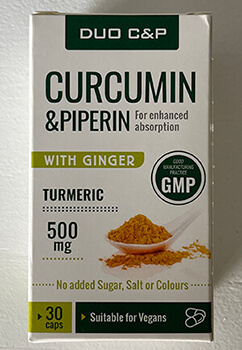

Ce-i asta? Un efect secundar de la yoga sau "aclimatizarea"? Cum am pierdut kilogramele în plus pe care le-am urât și am aflat o modalitate uimitoare de a slăbi
Mirela Pădureanu a plecat la Bali să caute pe ea însăşi și s-a întors cu o rețetă universală pentru pierderea în greutate

Cu mult timp în urmă, am văzut un film cu Julia Roberts în rolul principal — "Mănâncă. Roagă-te. Iubeşte." Îmi amintesc că atunci am fost foarte inspirată de povestea eroinei. Și eu am vrut să-mi împachetez hainele chiar a doua zi și să plec. Dar mi-am dat seama că acest lucru nu poate fi realizat din mai multe motive.
În primul rând, nimeni nu m-ar lăsa să lipsesc la locul de muncă mai mult de o săptămână. În al doilea rând, nu am putut lăsa fiica de 3 ani cu soțul meu.
De atunci a trecut mult timp și multe s-au schimbat. Din cauza pandemiei, am rămas fără serviciu. Relația noastră cu soțul meu s-a prăbușit din cauza șederii forțate non-stop împreună în același apartament. Divorțul a devenit o concluzie logică. Mi-am mâncat durerea cu o tonă de mâncare și, ca rezultat, în doar câteva luni, m-am îngrășat cu 14 kg.
În încercarea de a-mi stabiliza greutatea și starea interioară, m-am interesat de yoga și meditație. După aceea, m-am aprins de ideea de a merge la Yoga-Retreat la Bali. Și așa, câteva zile mai târziu, la fel ca Julia Roberts, îmi pregăteam hainele pentru a mă căuta pe sine însuşi. Ca o mantră, repetam cuvintele dintr-o broșură publicitară:
Eliberați-vă de roiul gândurilor zilnice. Amintiţi-vă de sine însuşi. Realizăm adevăratele dorințe.
Am crezut că după această călătorie se va începe o nouă etapă în viață.
9 zile de yoga-retreat
M-am îndrăgostit în insula Bali de la prima privire. Soarele strălucea cald și strălucitor. O mulțime de verdeață și flori înflorite peste tot. Și cel mai important — toți oamenii zâmbeau. Se părea că niciunul dintre localnici nu are probleme și toți sunt fericiți. În secret, speram să mă învăț și eu aşa.
Organizatorii ne-au dus la vilă într-o pădure tropicală cu acces la Oceanul Indonezian pustiu. Locul perfect pentru yoga și meditație. Și mi-a plăcut să mă deconectez de la gândurile mele despre viața anterioară și să mă concentrez asupra momentului actual
Dimineața, ne trezeam până în zori și întâlneam soarele practicând și meditând. Apoi erau prelegeri și la apus - din nou cursuri de yoga. Mă bucuram de senzații incredibile atunci când nu te grăbeşti nicăieri, priveşti natura și asculţi tăcerea interioară. Înainte de călătorie, am crezut că practici sunt prea multe, dar deja în vilă mi-am dat seama cât de minunat este de a practica mult.

În acest timp, nu am folosit telefoanele și nu am avut acces la Internet. În plus, nu ne gândeam deloc la gătit - am fost hrăniți cu mâncare vegetariană sănătoasă toată ziua. Apropo, despre mâncare.
Metamorfoza nutriției
De fapt, în viața de zi cu zi mănânc carne. Dar conform regulilor acestei călătorii, am decis să mă refuz.
M-am gândit că ar fi un experiment interesant. Poate că o să-mi placă și o să fiu un adevărat vegan.
Într-un cuvânt, nu aveam carne în vilă. Noi mâncam orez, pește, fructe, legume, supe și multe altele. De-a lungul timpului, am început să observ schimbări în digestie. De asemenea, în funcție de haine, am observat că greutatea a început să scadă. La început, m-am gândit că e din cauza unui meniu vegetarian, dar nu. Mai târziu, voi dezvălui toate hărțile.

Între timp, vreau să împărtășesc fragmente din jurnalul meu, pe care l-am condus în timpul călătoriei:
Ziua 1. Pentru masa de prânz a fost orez galben. Bănuiesc că acest lucru se datorează unui fel de condiment.
Ziua 3. Se pare că dieta locală este de folos pentru mine. Alimentele au început să se digere mai repede și a trecut balonarea. Mi-e dor de ciocolată.
Ziua 5. Deja 5 zile, cum nu mănânc carne și ciocolată, dar am energie chiar mai mult decât înainte. Nu simt absolut foame și nu sunt atrasă de mâncare dăunătoare.
Ziua 9. Pantaloni scurți în care am venit, cădeau de pe mine! Talia a devenit mai mică cu 5 centimetri! Bine, cel puțin că mai sunt rochii. Mă simt ca și cum aș străluci cu sănătate și energie din interior.
Pierderea în greutate a fost un bonus neașteptat de la călătorie (și nu doar pentru mine). Și am dorit foarte mult să continui în același spirit acasă. Dar pentru a face acest lucru, a trebuit să înțeleg de ce în timpul călătoriei am pierdut atât de bine în greutate. La urma urmei, acasă, am stat pe diferite diete și am practicat sportul, dar în cel mai bun caz, puteam scăpa doar de 2 kg pe lună. Și apoi greutatea se întorcea repede.
Secretul pierderii în greutate la Bali
După cum s-a dovedit a fi, motivul nu a fost în dieta vegetariană. Cum am înțeles asta?
În grupul nostru a fost Amanda, care este alergic la multe condimente. Special pentru ea, bucătarul pregătea mâncarea fără condimente. Adică, avea exact aceleași feluri de mâncare vegetariene ca și noi, dar fără condimente. În comparație cu ceilalți participanți ai grupului, ea nu a slăbit deloc. La ce greutate a fost - la aceea a venit acasă.
Deja acasă am înțeles: deci motivul a fost în condimente. Am început să citesc ce condimente sunt folosite la Bali și așa am ieșit la turmeric! Deci, iată de ce aproape toate felurile de mâncare au avut o nuanță galbenă!

S-a dovedit că turmericul are un efect bun asupra digestiei și metabolismului. Are capacitatea de a reduce nevoia de dulce și gras, de a întări imunitatea. Ajută la curățarea corpului de toxine. În plus, acest condiment ajută la îmbunătățirea circulației sângelui, ceea ce contribuie la un ten mai uniform și mai sănătos, la întinerire, la netezirea ridurilor mici, la îndepărtarea edemelor și la strălucirea pielii.
Au apărut, de asemenea, nuanțe de la turmeric:
- nu poate fi mâncată pe stomacul gol — suferă pancreasul;
- sunt posibile reacții adverse: diaree, scădere tensiunii;
- pentru ca turmericul să fie mai bine absorbit, trebuie luat cu ghimbir și piper negru.
Pentru pierderea în greutate, este de dorit să mâncaţi 1-2 lingurițe pe zi. În plus, este de dorit să adăugați mai mult ghimbir și piper negru. Nu a fost întotdeauna confortabil. Mai ales la locul de muncă sau în vacanță. Am avut de a transporta o mulțime de borcane diferite, să măsor și să amestec toate aceastea.
Și într-o zi am exagerat cu proporția și am avut un stomac deranjat. Apoi am decis să caut un instrument profesional pentru pierderea în greutate cu aceeași compoziție. Căutarea nu a durat mult — am găsit .

În compoziţia acestor capsule, numai turmeric, ghimbir și piper negru. Toate în proporțiile necesare pentru pierderea în greutate.
Luam câte 1 capsulă de 3 ori pe zi în timpul meselor. Pot să spun că acest lucru mi-a simplificat în mod semnificativ sarcina - în loc să amestec condimentele, acum beau doar o capsulă. În ceea ce privește efectul, este chiar mai bine decât a fost înainte. Mă trezesc dimineața plină de putere, fața arată mai bine și nu m-am îmbolnăvit toată iarna.
În ceea ce privește pierderea în greutate, înainte de câteva săptămâni de a lua , am pierdut în greutate cu 9 kg! În același timp, mi-am revizuit puțin dieta și de 2 ori pe săptămână fac yoga. Acum, greutatea mea este chiar mai mică decât înainte de carantină.
Privind înapoi, pot spune că călătoria mea a fost la fel de bună ca cea a Juliei Roberts. M-am dus la Bali să mă distrez, să mă găsesc și să încep o viață nouă. Am reușit să ating aceste obiective și chiar mai mult — în cele din urmă am pierdut în greutate! După călătorie, am reușit, de asemenea, să găsesc un loc de muncă. A rămas doar pentru să găsesc dragostea.
Katarina Richter, specialist în slăbire și nutriție adecvată. Experienţa de muncă - 13 ani
Pentru comentarii, am ajuns la Katarina Richter, specialist în slăbire și nutriție adecvată:
- Într-adevăr, puțini oameni știu, dar turmericul are o mulțime de proprietăți utile și, în special, are un efect pozitiv în procesul de scădere în greutate.
Turmericul ajută la scăderea în greutate în mod următor:
- accelerează procesele metabolice;
- blochează absorbția grăsimilor suplimentare în stomac;
- elimină grăsimile care nu au reușit încă să fie absorbite de organism;
- ajută la combaterea stratului de grăsime;
- dizolvă colesterolul dăunător și îl îndepărtează din organism;
- promovează curățarea accelerată a intestinului de toxine și mucus dăunător;
- îmbunătățește activitatea vezicii biliare;
- elimină produsele de dezintegrare din intestin și ficat;
- promovează dezinfectarea organelor interne;
- normalizează procesele digestive;
- luptă cu procesele inflamatorii.
Când corpul nostru nu luptă împotriva inflamației - îi este mai ușor să se concentreze asupra pierderii în greutate.
De asemenea, este important să se ia în considerare faptul că curcumina, principala componentă activă a turmericului, este slab absorbită în sânge. Prin urmare, experții recomandă utilizarea acestuia în asociere cu piper negru, care conține piperina — o substanță naturală care sporește absorbția turmericului.
Unicitatea este că în compoziția sa există nu numai turmeric și piper negru, ci și ghimbir. Toate componentele sunt în proporție perfectă, ceea ce ajută la prevenirea efectelor secundare. Datorită acestei compoziții , greutatea poate scădea de două ori mai repede.
În special, ghimbirul afectează accelerarea arderii grăsimilor, reducerea inflamației și maximizarea metabolismul. Recenziile celor care au pierdut în greutate demonstrează că oferă un sentiment de sațietate și protejează împotriva gustărilor. Cu ajutorul , puteți pierde în greutate până la 10 kg pe lună.
Despre eficacitate spune și sondajul pe care la efectuat distribuitorul printre 657 de cumpărători de diferite vârste și greutăți. Conform condițiilor, respondenții au luat timp de cel puțin 30 de zile. Pe baza datelor obținute, au fost compilate statistici:

- poate fi achiziționat la farmacie?
- Până de curând, produsul a fost vândut în farmacii, dar cazurile cu falsuri au crescut, astfel încât distribuitorul a decis să renunțe la această metodă de vânzare
În acest moment, poate fi achiziționat numai online. Pentru a atrage cumpărătorii, distribuitorul a decis să dețină o PROMOŢIE o singură dată, astfel poate fi cumpărat acum cu o reducere de 50%.
Pentru aceasta aveți nevoie:
- Locuiţi pe teritoriul UE.
- Completați formularul de comandă de mai jos până la (inclusiv), atâta timp cât produsul va mai fi disponibil.
- Răspundeţi la apelul operatorului.
- Luaţi și plătiți parcela la cel mai apropiat oficiu poștal.
Sperăm că va putea ajuta persoanele supraponderale să obțină subţirimea mult așteptată!
ATENŢIE: În cadrul promoției de la distribuitor, poate fi cumpărat cu o reducere de 50%. Pentru a face acest lucru, completați formularul de comandă plasat mai jos până la (inclusiv) . Cantitatea de mărfuri promoționale este limitată.
Folosesc zilnic. Mi s-a îmbunătățit digestia, greutatea a scăzut. Am devenit mult mai energică.
A fost interesant de citit, mulțumesc!
Cum să comand? N-am înțeles.
Completați formularul de comandă de mai sus, veți fi sunat înapoi
Am luat turmeric nu pentru pierderea în greutate, ci pentru a întări imunitatea în timpul iernii. Nu m-am îmbolnăvit niciodată în timpul iernii, deși la locul de muncă, toată lumea a fost bolnavă. De asemenea, ea m-a ajutat să fac față durerii în genunchi. Și am slăbit puțin.

Uneori adaug turmeric la diferite feluri de mâncare, dar n-am ştiut că încă mai poți slăbi de la el
Anterior, de asemenea, am adăugam turmeric curat, dar de multe ori uitam să facă acest lucru. De a lua este mult mai ușor și efectul este mult mai mare. Iată rezultatul meu în 4 săptămâni:
Wow! Trebuie să comandați până când există o reducere și totul s-a terminat
Poveste inspiratoare! Și eu visez la yoga-retreat
Sportul și dieta nu sunt pentru mine - nu mă pot forța. Am luat și am obținut greutatea dorită! Minus 9 kg, parcă nici nu au fost. Multe lucruri din garderobă va trebui să schimb, dar aceasta nu este o problemă. Principalul lucru este de a pierde în greutate!
Iar pentru bărbați, acest instrument este potrivit sau este doar pentru femei?
Pentru bărbați, de asemenea, e potrivit. Eu și soțul meu am băut împreună, el a slăbit cu 6 kg.

Coletul a venit foarte repede, mai târziu vă voi spune a ajutat sau nu.
Am trăit timp de 2 ani în Asia, într-adevăr toată lumea iubește turmeric și oameni grași, practic, nu sunt. Dar, cu proporțiile, este cu adevărat mai bine să nu experimentați — cred că este mai bine să beți pentru pierderea în greutate.